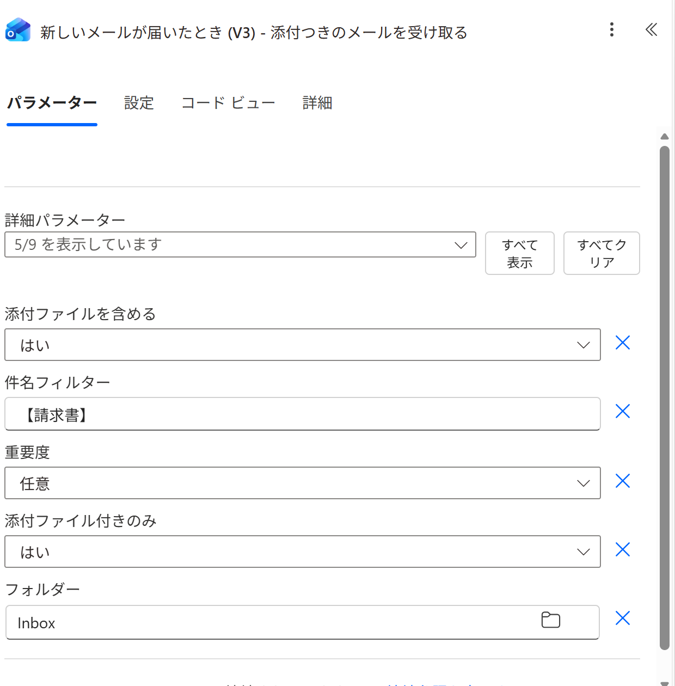
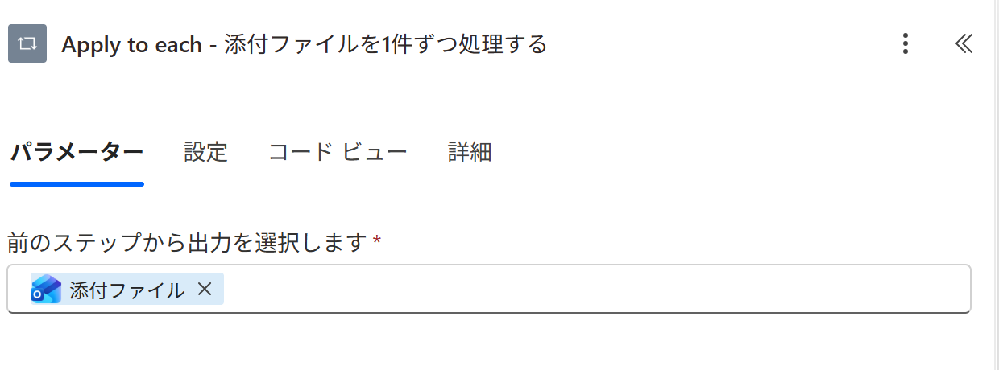
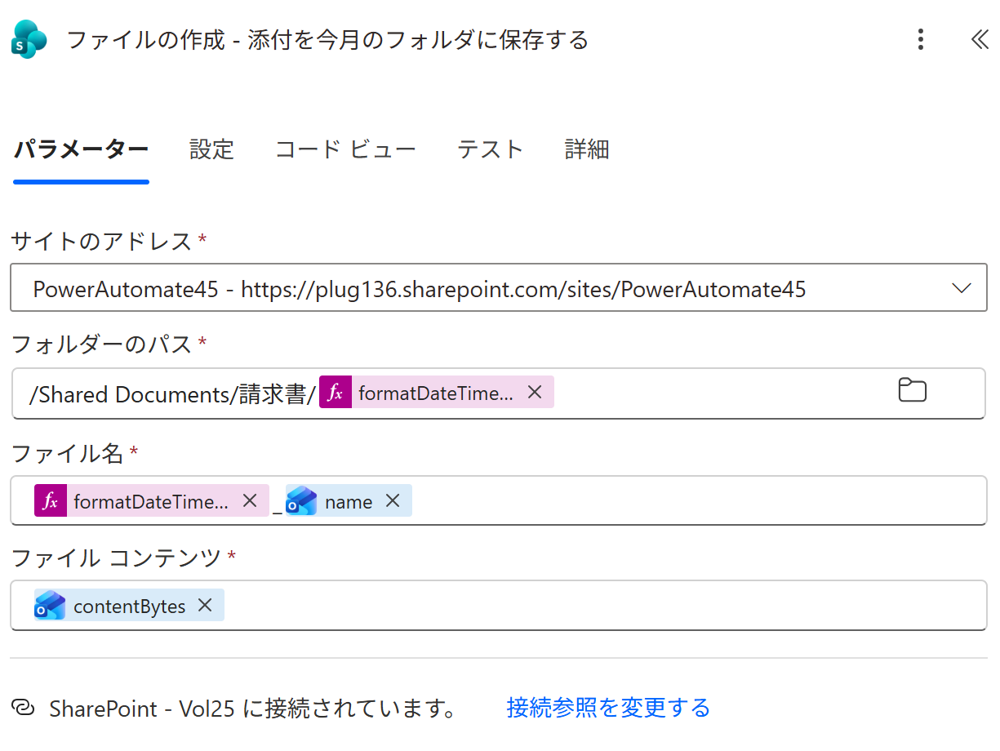
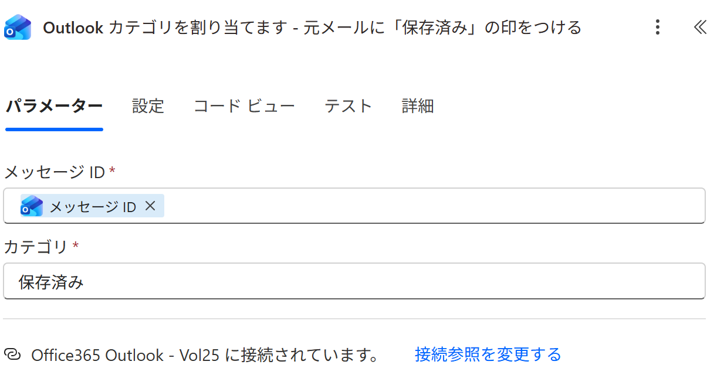
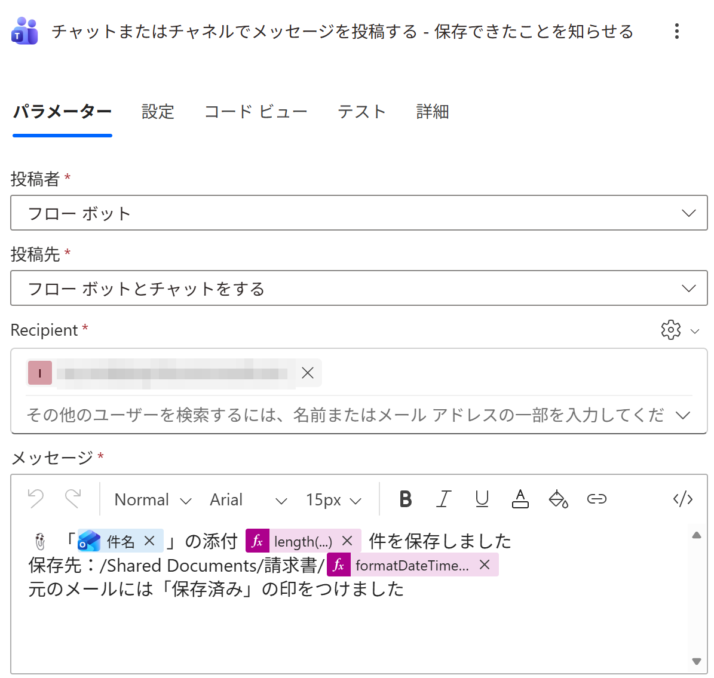
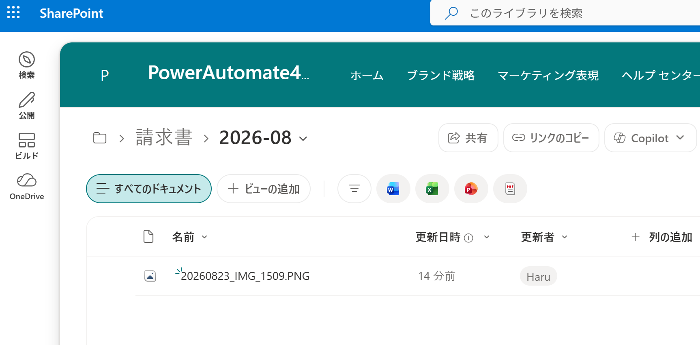

PA45 第25回｜ハンズオン手順
メールの添付を、SharePointへ自動保存件名に【請求書】が入った添付つきメールが届くと、添付が今月のフォルダに並びます。元のメールには「保存済み」の印がつきます。順番どおりに進めればできます。
今日つくるもの： 件名に
【請求書】 が入った添付つきメールが届いたら、添付を
SharePointの「請求書 › 今月」フォルダに保存し、元のメールに
「保存済み」の印をつけて、
Teamsに知らせるフロー。
📩 メールが届く→
📎 添付を1件ずつ→
📂 月フォルダに保存→
🏷️ 保存済みの印→
📣 Teamsに通知
🔰 初参加の方へ： ここから始めても大丈夫です。1人でも完成します——自分あてに添付つきメールを1通送るだけでテストできます。前回までの内容は必要ありません。
STEP 0
準備（保存先のサイトを決めるだけ）
作るものはありません。添付を置く SharePoint サイトを1つ決めるだけです。
- 添付を保存したい SharePoint サイトを開き、ブラウザのURLをコピーしておきます。
- ふだん使っているチームサイトでOK。無ければ「サイトの作成」→「チームサイト」で1つ作ります。
- フォルダは作りません。 「請求書」も「今月」のフォルダも、フローが自動で作ります。
- テスト用に、添付つきのメールを1通用意します（写真でもPDFでもOK）。件名には 【請求書】 を入れます。
💡 なぜ件名に【請求書】？ 目印がないと届いたメール全部でフローが動きます。テスト中に大量に動いてしまうので、件名で絞ります。実務でも「請求書」「報告書」など、いつも付いている言葉を入れておくと安全です。
STEP 1
添付つきメールが届いたら動くトリガー
Power Automate で「最初から作成」→ 自動フローを選び、トリガーを検索します。
- トリガーの検索で Office 365 Outlook を開き、「新しいメールが届いたとき (V3)」を選びます。
- 詳細パラメーターの 「すべて表示」を押します。最初は5個しか出ていません。
- 4つの設定を、下のとおりに入れます。ここが今日いちばんの山場です。
添付ファイルを含めるはい添付ファイル付きのみはい件名フィルター【請求書】フォルダーInbox

実際の画面。「添付ファイルを含める＝はい」「添付ファイル付きのみ＝はい」「件名フィルター＝【請求書】」まで入った状態。
⚠️ 「添付ファイルを含める」は既定でオフ（詰まりポイント）：
- オフのままだと、添付の中身が届きません。フローは成功するのに、0KBの空ファイルが保存されます。
- 「添付ファイル付きのみ」は別の設定です。こちらは「添付がないメールでは動かない」という意味。両方 はい にします。
- 設定が見当たらない時は 「すべて表示」を押し忘れています。
この2つの違い、ひとことで： 添付ファイル付きのみ＝いつ動くかの話。添付ファイルを含める＝中身を持ってくるかの話。保存したいので、中身を持ってくる方も必ずオンにします。
STEP 2
添付を1件ずつ取り出す
1通のメールに添付が3つ入っていることもあります。1件ずつ処理する箱を用意します。
- ＋新しいステップ→ 「コントロール」の 「Apply to each」を追加します。
- 「前のステップから出力を選択します」の欄に、動的コンテンツから 添付ファイル を入れます。

実際の画面。渡すのは「添付ファイル」ひとつだけ。
💡 ここがこの回の学び： 「まとめて来たものを、1件ずつ取り出す」は自動化の定番の形です。この箱の中に、次のSTEP 3を入れます。箱の外に置くと、1件目しか保存されません。
STEP 3
今月のフォルダに、名前を変えて保存する
Apply to each の中に、SharePointへ保存するアクションを入れます。
- Apply to each の中の ＋ → SharePoint の 「ファイルの作成」を追加します。
- サイトのアドレスに、STEP 0でコピーしたサイトを選びます。
- フォルダーのパスに、下の文字を打ち、続けて式（fx）で「今月」を足します。
フォルダーのパス（先に打つ文字）
/Shared Documents/請求書/
式（fx に貼る・今月のフォルダ名）
formatDateTime(utcNow(),'yyyy-MM')
- ファイル名は、式（fx）で日付を入れ、続けて _ と、動的コンテンツの 名前 をならべます。
- ファイル コンテンツに、動的コンテンツの contentBytes を入れます。
式（fx に貼る・ファイル名の先頭の日付）
formatDateTime(utcNow(),'yyyyMMdd')

実際の画面。ファイル名は「式（日付）＋_＋名前」の3つ並び。中身は contentBytes。
💡 2つの発見：
- フォルダは作らなくていい。 「請求書」も「2026-08」も無ければ自動でできます。月が変われば勝手に新しいフォルダが増えます。
- 画面は日本語、URLは英語。 SharePointの「ドキュメント」ライブラリは、中身の名前が /Shared Documents です。ここは日本語で打っても見つかりません。
なぜファイル名の頭に日付？ 同じ名前のファイルが届くと上書きされてしまうからです。頭に日付を付けると上書きが起きず、フォルダの中も日付順に並びます。
STEP 4
元のメールに「保存済み」の印をつける
Apply to each の外（下）に追加します。処理したメールが一目で分かるようになります。
- Apply to each の下の ＋ → Office 365 Outlook の 「Outlook カテゴリを割り当てます」を追加します。
- 2つの欄を埋めます。
メッセージ IDメッセージ ID（動的コンテンツ）カテゴリ保存済み

実際の画面。入れるのは「メッセージ ID」と、カテゴリ名の文字だけ。
💡 これは意外と知られていません。 Outlookの色ラベル（分類）をフローから付けられます。受信トレイの一覧で色が見えるので、「これはもう保存した」が一目で分かります。同じメールを二度処理する事故も防げます。
⚠️ 色を付けたいなら、先にOutlookでカテゴリを作っておく：
- フローはOutlookに登録していない名前でも設定できます。ただしその場合、色が付きません（名前だけのラベルになります）。
- 色を出すには、Outlookで同じ名前のカテゴリを作ります。メールを右クリック →「分類」→「新規作成」→ 名前に 保存済み と入れ、色を選んで Enter。すでに付いているメールにも、あとから色が反映されます。
- フロー側のカテゴリ欄には、その名前を一字一句同じに入れます（スペースや全角・半角のズレで別扱いになります）。
STEP 5
「◯件 保存しました」を知らせる
最後に、何件保存したかと、保存先を知らせます。
- ＋新しいステップ→ Microsoft Teams の 「チャットまたはチャネルでメッセージを投稿する」を追加します。
- 投稿者＝フロー ボット。投稿先は、まずは確実な 「フロー ボットとチャットをする」（自分あて）にしておくと、当日つまずきません。
- メッセージに、件名・件数・保存先を差し込みます。件数は式（fx）で数えます。
式（fx に貼る・添付が何件あったか）
length(triggerOutputs()?['body/attachments'])
メッセージの例
📎「［件名］」の添付 ［件数］ 件を保存しました
保存先：/Shared Documents/請求書/［今月］
元のメールには「保存済み」の印をつけました

実際の画面。宛先はぼかしています。件数は length(...) の式、保存先の月は formatDateTime の式。
📣 チームのチャネルに出したい時は： 投稿先を「チャネル」に変えて、チームとチャネルを選びます。経理チームの部屋に「請求書が届いて保存しました」と出せます。
STEP 6
保存して、テストする
- 右上の 「保存」→ フローをオンにします。
- 件名に 【請求書】 を入れて、添付つきのメールを自分あてに送信します。
- 1〜2分待つと、各ステップに緑のチェック ✓。SharePointに「請求書 › 今月」フォルダができ、日付つきのファイルが入ります。

実際の画面。フォルダも自動でできて、ファイル名の頭に日付が付いています。
💡 ここまで来たら完成です。 受信トレイに戻ると、送ったメールに「保存済み」の色ラベルが付いています。Teamsにも通知が届いているはずです。
うまくいかないとき：
- フローが動かない → 件名に 【請求書】 が入っているか／フローがオンか。メールの到着から動くまで1〜2分かかることがあります。
- ファイルが0KB → STEP 1の 「添付ファイルを含める＝はい」を忘れています。ここが一番多い原因です。
- 保存でエラー → フォルダーのパスの先頭が /Shared Documents になっているか。日本語の「ドキュメント」では見つかりません。
- 1件しか保存されない → 「ファイルの作成」が Apply to each の中に入っているか。
- 思ったより多く保存される → メールの署名の画像が添付として拾われています。テストは署名なしのメールで送ると分かりやすいです。